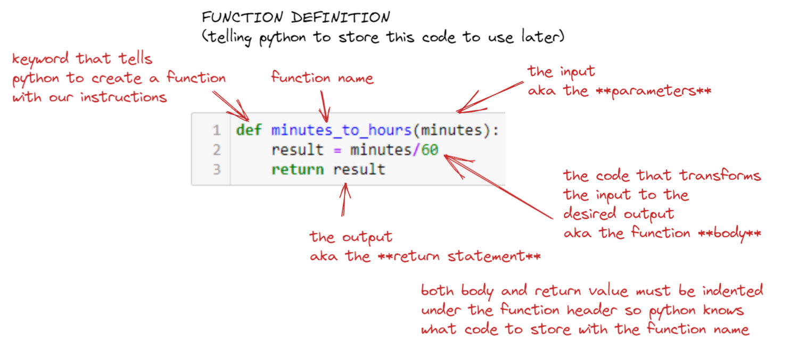
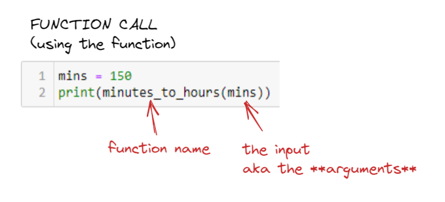

3: Functions
Contents
3: Functions#
Learning goals:#
Explain why we need functions in our programs
Identify key components of a function in Python
Construct a function block, from scratch
Convert existing code to a function
Use a function
Identify common errors with functions
What are functions and why do we care about them?#
Functions are basically machines that take some input(s), do some operations on the input(s), and then produce an output.
Why we need functions:
Model your problem so that it can be solved by a computer well aka Computational Thinking
Make fewer errors (reduce points of failure from copy/paste, etc.)
Motivating example: simple data analysis pipeline to compute percent change in revenue from last year.
We have two sales numbers
last_year = "$150,000"this_year = "$230,000"
Q: How can we analyze them? What are the subproblems here that we’ll need to solve?
A:
Two main substeps:
CONVERT strings to integers
COMPUTE the percent change
Also, pragmatically: I’m explaining functions now so the PCEs are a little less confusing.
You’ll really start to feel a practical need for functions once your programs start to approach a regular level fo complexity, starting in Module 2 or so.
The basic pattern: DEFINE a function, use (CALL) a function#
There are two main parts of using functions in programming: 1) DEFINING a function, and then 2) CALLING (using) a function.
Here’s an example:
# DEFINE a function that takes an input string and adds a specified number of characters to it
def longer(inputString, howMany):
# what to add; create a string that is
# howMany characters long (by multiplying)
toAdd = "a"*howMany
# add that long character to the input string
# and store result
result = inputString + toAdd
# return the result
return result
s = "huzzah"
# this is how the string is rn
print("S is originally", len(s), "characters long. Here it is:", s)
# now CALL the longer() function to make s 3 characters longer
howMany = 3
longer_s = longer(s, howMany)
# this is how long the string is now
print("S is now", len(longer_s), "characters long after adding", howMany, "characters. Here it is:", longer_s)
S is originally 6 characters long. Here it is: huzzah
S is now 9 characters long after adding 3 characters. Here it is: huzzahaaa
The first cell defines the function longer(). The second cell calls the function on the 6th line (longer(s, howMany)).
Here’s another example.
def minutes_to_hours(minutes):
result = minutes/60
return result
minutes = 150
hours = minutes_to_hours(minutes)
print(minutes, "minutes is", hours, "hours")
150 minutes is 2.5 hours
The first cell is the function definition. The second cell calls the function on the 2nd line (minutes_to_hours(minutes)).
Let’s practice! Look at the following two cells.
# A
def greet_user(username):
msg = "Hello " + username + "!"
return msg
# B
username = "Joel"
greeting = greet_user(username)
print(greeting)
Hello Joel!
Q: Which one is the function definition and which one is the function call?
A:
A is the function definition, and B has code that calls the function.
Q: Which line in the function call cell is actually calling the function?
A:
Line 3!
This define-call sequence should look similar to our PCE structure!
In later more complex programs, you often define a few functions at once, or borrow them from other bits of code, and then use them in a single program. You can also compose functions into larger functions!
Here’s an example sequence of functions from our motivating example.
# DEFINE the two sub-functions we need
def clean_sale_number(saleNumStr):
# make the input numbers actually numbers
# 1: remove dollar signs
saleNumStr = saleNumStr.replace("$", "")
# 2: remove the comma
saleNumStr = saleNumStr.replace(",", "")
# 3: convert to float
result = float(saleNumStr)
return result
def compute_percent_change(lastYear, thisYear):
# first make the input numbers actually numbers
lastYear = clean_sale_number(lastYear)
thisYear = clean_sale_number(thisYear)
# then compute the percent change
result = ((thisYear - lastYear)/lastYear)*100
return result
# actually use (CALL) the functions.
lastYear = "$500,000.35"
thisYear = "$1,256,000.21"
percentChange = compute_percent_change(lastYear, thisYear)
print(percentChange)
151.19986616009368
Q: Where are the function calls?
A:
On the third line of the second cell (compute_percent_change(lastYear, thisYear)), but also inside the body of the compute_percent_change() function definition, calling the clean_sale_number() function for both lastYear and thisYear variables!
Without functions, we would need to copy/paste the clean sales operation. This is both annoying and increases the likelihood of errors!
def compute_percent_change(lastYear, thisYear):
# first make the input numbers actually numbers
# make the input numbers actually numbers
# 1: remove dollar signs
lastYear = lastYear.replace("$", "")
# 2: remove the comma
lastYear = lastYear.replace(",", "")
# 3: convert to float
lastYear = float(lastYear)
# make the input numbers actually numbers
# 1: remove dollar signs
thisYear = thisYear.replace("$", "")
# 2: remove the comma
thisYear = thisYear.replace(",", "")
# 3: convert to float
thisYear = float(thisYear)
# then compute the percent change
result = ((thisYear - lastYear)/lastYear)*100
return result
Anatomy of a Python function definition and function call#
Let’s take a closer look at what a function actually is in Python.
Function definition#
In Python, a function consist of three main components:
Parameters: what are the main input variables your function will be manipulating?
Body of the function: what operations will your function be performing on/with the input variables?
Return value: what will your function’s __output __be (i.e., what will come out of the function to the code that is calling the function)?
Let’s go back to our example of a function to convert minutes to hours.
def minutes_to_hours(minutes):
result = minutes/60
return result
The function minutes_to_hours() has input parameter minutes, a __body __of code that divides minutes by 60 and stores it in the variable result, and a return value that is the value of the variable result
So that’s the conceptual bits of a function. There’s also the syntax bits that make up a function definition. To see what they are, let’s compare the function definition to two other function definitions.
def greet_user(username):
msg = "Hello " + username + "!"
return msg
def longer(inputString, howMany):
toAdd = "a"*howMany
result = inputString + toAdd
return result
There’s a fair bit to notice here.
Q: What do you see here that you think is important?
A:
def (bold green)
return (bold green), indented under the function name
name of the function (typically in blue)
parentheses after the function name
one or more parameters inside the parentheses
colon
indented code as the body of the function (everything between the colon and the return statement)
Let’s practice with another function definition.
def greet_user(username):
msg = "Hello " + username + "!"
return msg
Q: What are the parameters, function body, and return value(s) here?
A:
Parameter(s): username
Function body:
msg = "Hello " + username + "!"Return value: msg
And another example:
def longer(inputString, howMany):
toAdd = "a"*howMany
result = inputString + toAdd
return result
Q: What are the parameters, function body, and return value(s) here?
A:
Parameter(s): inputString, howMany
Function body: lines 2 and 3
Return value: result
NOTE: when you run a function definition, there should be no output. The same thing is happening as with a variable assignment statement, like a = 3. Python is storing the code in the function body (and its associated parameters and return values) to be used later, just like with a = 3, Python is storing the value of 3 in the variable a to be used later.
So. When you write a colon after a variable name, and indent code after it, it’s equivalent to an assignment statement (you’re assigning the code body and return statement to the function name).
Function call#
In Python, function calls consist of at least:
A reference to the function name
One or more arguments (inside parentheses) to pass as input to the function (how many and what type is determined by the parameters in the function definition) Alongside other code
Let’s look at an example.
mins = 150
# call the minutes_to_hours function
# with mins as an argument
# and store the return value in the variable hours
hours = minutes_to_hours(mins)
print(hours)
2.5
Here, we have the function name (minutes_to_hours), and the argument mins being passed as input to the function, and code that takes the return value from the function and prints it out.
Here it is in pictures
 {kind=link}
{kind=link}
What’s happening under the hood at this function call is:
Define the variable
minsand put the value 150 in itRetrieve the code associated with the function name
minutes_to_hoursand give itminsas an input argumentRun the code associated with the function name
minutes_to_hourswithminsas input, and return the resultPass that result to the
printfunction (yes, this is a function also!) as an input argument.
It may help to plug this code (and really all the other examples in this lecture) into pythontutor to step through it line by line.
Let’s look at another example pair.
def bouncer(age):
result = age >= 21
return result
your_age = 24
come_in = bouncer(your_age)
print(come_in)
True
Key idea: Arguments vs. parameters#
Parameters and arguments are easy to confuse. They both go in the parentheses after the function name. What’s the difference?
It helps me to think of them as two sides of a special kind of variable assignment statement.
Parameters are the key variables in the function (what’s on the left side of an assignment statement). Arguments are the values you assign to those variables when you use the function (what’s on the right side of an assignment statement).
One tip I have to drive this home is to write your function calls like this, where you actually make this analogy explicit.
We’ll actually see this format come back later on when we deal with more complicated functions, especially when we borrow code from other libraries!
If you want to make life easier for yourself when you’re still learning, you can make the mapping from arguments (on the right) to parameters (on the left) in a function call explicit in the function call code
minutes_to_hours(minutes=90)
1.5
Equivalently:
mins = 120
minutes_to_hours(minutes=mins)
2.0
And:
my_age = 19
bouncer(age=my_age)
False
How to define functions#
Writing a function from scratch#
There are a few main steps to follow:
Write the code that goes in the function (the steps)
Create a function definition
Write the skeleton of your function (
def, a name, parentheses,returnstatement)
Integrate your code into the function:
Fill out the parameters
Fill out the body of the code
Fill out the return statement
Run the function definition cell (this defines the function for Python)
Let’s look at an example together!
Let’s write a function that applies a discount to a sale, given the sale amount and the percentage discount.
Here is code that successfully computes a saleAmount after applying a discount
saleAmount = 10.00
percentageDiscount = 0.3
saleAmount - saleAmount*percentageDiscount
7.0
And here is a function definition that encapsulates that code into a function apply_discount(), with saleAmount and percentageDiscount as input parameters, the main computation from above applying the discount in the function body, and then defining the return value as the finalAmount.
def apply_discount(saleAmount, percentageDiscount):
finalAmount = saleAmount - saleAmount*percentageDiscount
return finalAmount
Here’s an example of how we can call that function, using our explicit argument-parameter notation from before.
apply_discount(saleAmount=325.99, percentageDiscount=.2)
260.79200000000003
And another simple one: give me the area of a triangle, given its base and height.
Here’s functioning code:
b = 3
h = 2
0.5*b*h
3.0
And here’sa a function definition for a function triangle_area() that has base and height (renamed here from b and h for readability, and we make sure to propagate that change to the function body), and area as the return value.
def triangle_area(base, height):
area = 0.5*base*height
return area
Here’s an example of calling that function.
triangle_area(base=5, height=10)
25.0
Converting existing code into a function#
The steps here are similar to writing from scratch, with the main difference that we:
Decide which of the variables in the existing code are inputs (parameters), and which ones are outputs (return values), then put those in the function definition and return statements.
Integrate the rest of the working code into the body of the function.
Here we’ve written the code for our substeps of converting the numbers into.. numbers. We know it works.
# test number
sale = "$600,153.25"
# make the input numbers actually numbers
# 1: remove dollar signs
sale = sale.replace("$", "")
# 2: remove the comma
sale = sale.replace(",", "")
# 3: convert to float
result = float(sale)
result # the output
600153.25
We can then encapsulate this into a function clean_sale_number(), with rawSale as the main input parameter, and the various operations cleaning the string in the function body, and the resulting float value as a return value.
# 1. decide which variables are inputs/outputs, fill out function skeleton
# 2. integrate rest of code into the body of the function
def clean_sale_number(rawSale):
# 1: remove dollar signs
sale = rawSale.replace("$", "")
# 2: remove the comma
sale = sale.replace(",", "")
# 3: convert to float
result = float(sale)
return result
We can then call the function like this:
clean_sale_number(rawSale="$2,115,000")
2115000.0
Common errors when using functions#
Order of execution and NameErrors#
Remember: In a computational notebook like Jupyter, Python executes the code in the order that you run the cells. If you run the cells from top to bottom, then it behaves the same way as a script. But if you run the cells in a different order, then it’s different.
This is important because a common error is to forget to run your function definition code before you call the function. This will result in a NameError, which means you’re saying something to Python with words it doesn’t yet know. The solution is to go back and make sure you do Step 2.
If you’re updating your function, you’ll get different kinds of errors. Sometimes it will be a silent logical or semantic error (where the code will run, but the results of the code will not be what you intend). So you always want to make sure you run a function definition cell to update it in Python’s memory, before you run any code that uses the function.
If we were to try to call this function clean_sale, we would get a NameError, because we have not defined any function called clean_sale (we named it clean_sale_number!):
clean_sale(rawSale="$2,115,000")
Sometimes we define a function, but forget to run it
def divide(x, y):
result = x / y
result = int(result)
return result
And then try to call the function, and also get the same NameError, even though the names match!
divide(25, 5)
Fix here is to always make sure you run a function definition before you try to call it.
This will also yield a NameError, because we haven’t defined a division() function!
division(25, 3)
Missing / incorrect return statements#
Technically, from a syntax perspective, the return statement in a function definition is optional. Functions that don’t have return values are syntactically valid (legal code); they’re known as a “void functions”.
Confusingly, in Python, a void function still does return a value (i.e.,
None).Honestly, void functions kind of break the model of what a function should be (subcomponents in a larger program). In my experience, they are also quite rare in practice, except as, say, a main control loop, or the “main” procedure in a script. So, if you’re confused by void functions and find “regular” (also sometimes called “fruitful”) functions (with return values) easier to think conceptualize, I’m happy.
For now, I want you to pretend void functions don’t exist (i.e., do not write void functions; always have a return statement).
So why am I telling you this then?
You’ll see void functions in many Python tutorials. Often you’ll even learn about void functions before fruitful (or regular) functions. I think this may be because it has fewer moving parts? I’m not really sure.
Practically, too, if you leave out a
returnstatement, your code will still run! So the syntax is fine! But you’ll probably have made a semantic error (you meant to give the output of the function to some other piece of code, but the code you wrote isn’t actually doing that). This is a very common error for beginning programmers. So you if run into this, you’re in good company! If you’re pretty sure that the code in the body of the function is correct, but you’re confused by what happens when the function is used (e.g., it’s not giving you the value you expect), but the code runs, it’s a good idea to check yourreturnstatement!
An extremely common way to make this mistake is to write a print statement in the function body to produce output to you, the user, and declare that it works, but forget to write a return statement
Example: if we define the functions this way, without return statements, they will still run! BUT we won’t be able to use their results in a meaningful way, leading to an error if we try
def tip(base, percentage):
result = base * percentage
print(result)
def tax(base, tax_rate):
result = base * tax_rate
print(result)
This code will yield a strange TypeError complaining about trying to do math with an int and a NoneType (because the functions produce None return values by default!)
base = 3
tip_rate = 0.2
tax_rate = 0.08
total_check = tip(base, tip_rate) + base + tax(base, tax_rate)
print(total_check)
Mismatching arguments and parameters#
Make sure that the body of your function is operating on the actual input variables you’re passing in via your parameters! This is a common error to make when you’re converting code to functions.
For example, if we define a function like this, notice how the x and y parameters are never actually used in the function body!
# example
def minus(x, y):
result = a - b
return result
When we call this function with a and b arguments, the code will run and produce expected output. BUT. The function will only work in this specific function call, when a and b are defined. And it will always use the values of a and b, even if you give it different parameters.
a = 3
b = 2
diff = minus(a, b)
print(diff)
1
For example, we would expect this function call to give us the value of 10, but it will still give 1 as the result, since the function body is ignoring the x and y input parameters, and operating directly on a and b.
x = 12
y = 2
diff = minus(x, y)
print(diff)
1
A related error is hard-coding the variables inside the function body instead of letting the parameter(s) be defined and given value from the argument(s) in the function call.
Example: as written, no matter what arguments we pass in, the following function will always produce 2 as its output. This is because we are redefining x and y in the body of the function and giving them specific values of 3 and 1, which means the function will ignore any argument values that are assigned to the parameters. So this function will only subtract precisely 3 from 1, rather than subtracting any number x and y.
def minus(x, y):
x = 3
y = 1
result = x - y
return result
For example, this function call will yield 2 instead of 5, as we would expect:
minus(10, 5)
2
Finally, if you define a certain number of parameters, but give it a different number of arguments, Python will fail with a TypeError.
Like this:
# example
def minus(x, y):
result = x - y
return result
minus(3)
---------------------------------------------------------------------------
TypeError Traceback (most recent call last)
/var/folders/xz/_hjc5hsx743dclmg8n5678nc0000gn/T/ipykernel_52246/3405736382.py in <module>
4 return result
5
----> 6 minus(3)
TypeError: minus() missing 1 required positional argument: 'y'
The fix is to make sure that you have the same number of arguments as parameters. Again, writing out your function calls in explicit argument-parameter mappings can help make sure that you don’t make this error, like this:
minus(x=3, y=2)